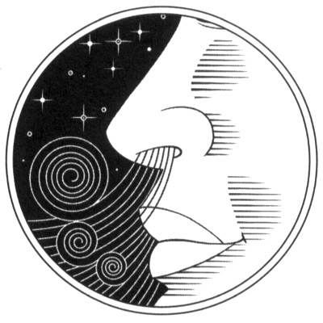

Discourse on the
Full Awareness of Breathing

Anapanasati Sutta
Translation by Thich Nhat Hanh
I heard these words of the Buddha one time when he was staying in Savatthi in the Eastern Park, with many well-known and accomplished disciples, including Sariputta, Mahamoggallana, Mahakassapa, Mahakacchayana, Mahakotthita, Mahakappina, Mahachunda, Anuradha, Revata, and Ananda. The senior bhikkhus (monks) in the community were diligently instructing bhikkhus who were new to the practice — some instructing 10 bhikkhus, some 20, some 30, and some 40; and in this way the bhikkhus who were new to the practice gradually made great progress.
That night the moon was full, and the Pavarana Ceremony was held to mark the end of the rainy-season retreat. Lord Buddha, the Awakened One, was sitting in the open air, and his disciples were gathered around him. After looking over the assembly, he began to speak:
O bhikkhus, I am pleased to observe the fruit you have attained in your practice. Yet I know you can make even more progress. What you have not yet attained, you can attain. What you have not yet realized, you can realize perfectly. To engage your efforts, I will remain here until the next full-moon day.
When they heard that the Lord Buddha was going to remain in Savatthi for another month, bhikkhus throughout the country began traveling there to study with him. The senior bhikkhus continued teaching the bhikkhus new to the practice even more ardently. Some were instructing 10 bhikkhus, some 20, some 30, and some 40. With this help, the newer bhikkhus were able, little by little, to continue their progress in understanding.
When the next full-moon day arrived, the Buddha, seated under the open sky, looked over the assembly of bhikkhus and began to speak:
O bhikkhus, our community is pure and good. At its heart, it is without useless and boastful talk, and therefore it deserves to receive offerings and be considered a field of merit. Such a community is rare, and any pilgrim who seeks it, no matter how far he must travel, will find it worthy.
O bhikkhus, there are bhikkhus in this assembly who have realized the fruit of Arhatship, destroyed every root of affliction, laid aside every burden, and attained right understanding and emancipation. There are also bhikkhus who have cut off the first 5 internal knots and realized the fruit of never returning to the cycle of birth and death. There are those who have thrown off the first 3 internal knots and realized the fruit of returning once more. They have cut off the roots of greed, hatred, and ignorance, and will only need to return to the cycle of birth and death one more time. There are those who have thrown off the 3 internal knots and attained the fruit of stream-enterer, coursing steadily to the Awakened State.
There are those who practice:
- the 4 Establishments of Mindfulness,
- the 4 Right Efforts,
- the 4 Bases of Success,
- the 5 Faculties,
- the 5 Powers,
- the 7 Factors of Awakening,
- the Noble Eightfold Path,
- (True Love:) loving kindness, compassion, joy & equanimity,
- the 9 Contemplations (on death),
- the Observation of Impermanence.
- There are also bhikkhus who are already practicing Full Awareness of Breathing.
Full Awareness of Breathing
O bhikkhus, the Full Awareness of Breathing, if developed and practiced continuously, will be rewarding and bring great advantages. It will lead to success in practicing the 4 Establishments of Mindfulness. If the method of the 4 Establishments of Mindfulness is developed and practiced continuously, it will lead to success in the practice of the 7 Factors of Awakening. The 7 Factors of Awakening, if developed and practiced continuously, will give rise to understanding and liberation of the mind.
What is the way to develop and practice continuously the method of Full Awareness of Breathing so that the practice will be rewarding and offer great benefit?
It is like this, bhikkhus: the practitioner goes into the forest or to the foot of a tree, or to any deserted place, sits stably in the lotus position, holding his or her body quite straight, and practices like this:
- (1. Body)
- Breathing in/out, I know I am breathing in/out.
- 1.Breathing in/out a long breath, I know I am breathing in/out a long breath.
- 2.Breathing in/out a short breath, I know I am breathing in/out a short breath.
- 3.Breathing in/out, I am aware of my whole body.
- 4.Breathing in/out, I calm my whole body.
- (2. Feelings)
- 5.Breathing in/out, I feel joyful.
- 6.Breathing in/out, I feel happy.
- 7.Breathing in/out, I am aware of my mental formations.
- 8.Breathing in/out, I calm my mental formations.
- (3. Mind)
- 9.Breathing in/out, I am aware of my mind.
- 10.Breathing in/out, I make my mind happy.
- 11.Breathing in/out, I concentrate my mind.
- 12.Breathing in/out, I liberate my mind.
- (4. Objects of Mind)
- 13.Breathing in/out, I observe the impermanent nature of all dharmas.
- 14.Breathing in/out, I observe the disappearance of desire.
- 15.Breathing in/out, I observe the no-birth, no-death nature of all phenomena.
- 16.Breathing in/out, I observe letting go.
The Full Awareness of Breathing, if developed and practiced continuously according to these instructions, will be rewarding and of great benefit.
4 Establishments of Mindfulness
In what way does one develop and continuously practice the Full Awareness of Breathing, in order to succeed in the practice of the 4 Establishments of Mindfulness?
When the practitioner breathes in/out a long or a short breath, aware of his breath or his whole body, or aware that he is making his whole body calm and at peace,
he abides peacefully in the observation of the body in the body, persevering, fully awake, clearly understanding his state, gone beyond all attachment and aversion to this life. These exercises of Breathing with Full Awareness belong to the 1. Establishment of Mindfulness, the body.
When the practitioner breathes in/out aware of joy or happiness, of the mental formations, or to make the mental formations peaceful,
... feelings.
When the practitioner breathes in/out with the awareness of the mind, or to make the mind happy, to collect the mind in concentration, or to free and liberate the mind,
... mind.
Without Full Awareness of Breathing, there can be no development of meditative stability and understanding.
When the practitioner breathes in/out and contemplates the essential impermanence or the essential disappearance of desire or the no-birth, no-death nature of all phenomena or letting go,
... objects of mind.
The practice of Full Awareness of Breathing, if developed and practiced continuously, will lead to perfect accomplishment of the 4 Establishments of Mindfulness.
Attaining the 7 Factors of Awakening
Moreover, if they are developed and continuously practiced, the 4 Establishments of Mindfulness will lead to perfect abiding in the 7 Factors of Awakening. How is this so?
When the practitioner can maintain, without distraction, the practice of observing
- the body in the body,
- the feelings in the feelings,
- the mind in the mind,
- and the objects of mind in the objects of mind,
she will attain the 1. Factor of Awakening, namely mindfulness. When this factor is developed, it will come to perfection.
When she can abide in meditative stability without being distracted and can investigate every dharma, every object of mind that arises,
she will attain ... investigation ...
When she can observe and investigate every dharma in a sustained, persevering, and steadfast way, without being distracted,
she will attain ... energy [diligence] ...
When she has reached a stable, imperturbable abiding in the stream of practice,
she will attain ... joy ...
When she can abide undistractedly in the state of joy, she will feel her body and mind light and at peace,
she will attain ... ease ...
When both body and mind are at ease, the practitioner can easily enter into concentration,
she will attain ... concentration ...
When she is abiding in concentration with deep calm, she will cease discriminating and comparing,
she will attain ... letting go [equanimity] ...
This is how the 4 Establishments of Mindfulness, if developed and practiced continuously, will lead to perfect abiding in the 7 Factors of Awakening.
How will the 7 Factors of Awakening, if developed and practiced continuously, lead to the perfect accomplishment of true understanding and complete liberation?
If the practitioner follows the path of the 7 Factors of Awakening, living in quiet seclusion, observing and contemplating the disappearance of desire, he will develop the capacity of letting go. This will be a result of following the path of the 7 Factors of Awakening and will lead to the perfect accomplishment of true understanding and complete liberation.
This is what the Lord, the Awakened One, said; and everyone in the assembly felt gratitude and delight at having heard his teachings.